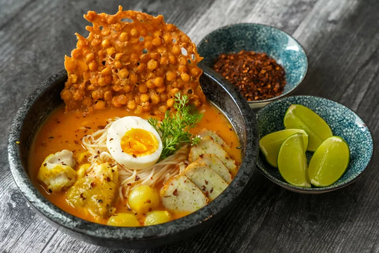

01 / 05

Myanmar
SIGNATURE FOOD · MYANMAR
Mohinga
A fragrant fish-and-rice-noodle soup, often enjoyed for breakfast.
THE STORY
Mohinga is deeply woven into everyday Burmese food culture and is sold in markets and teashops.
WHY IT'S LOVED
Its comforting broth, fresh toppings, and presence across the country make it a beloved national favorite.